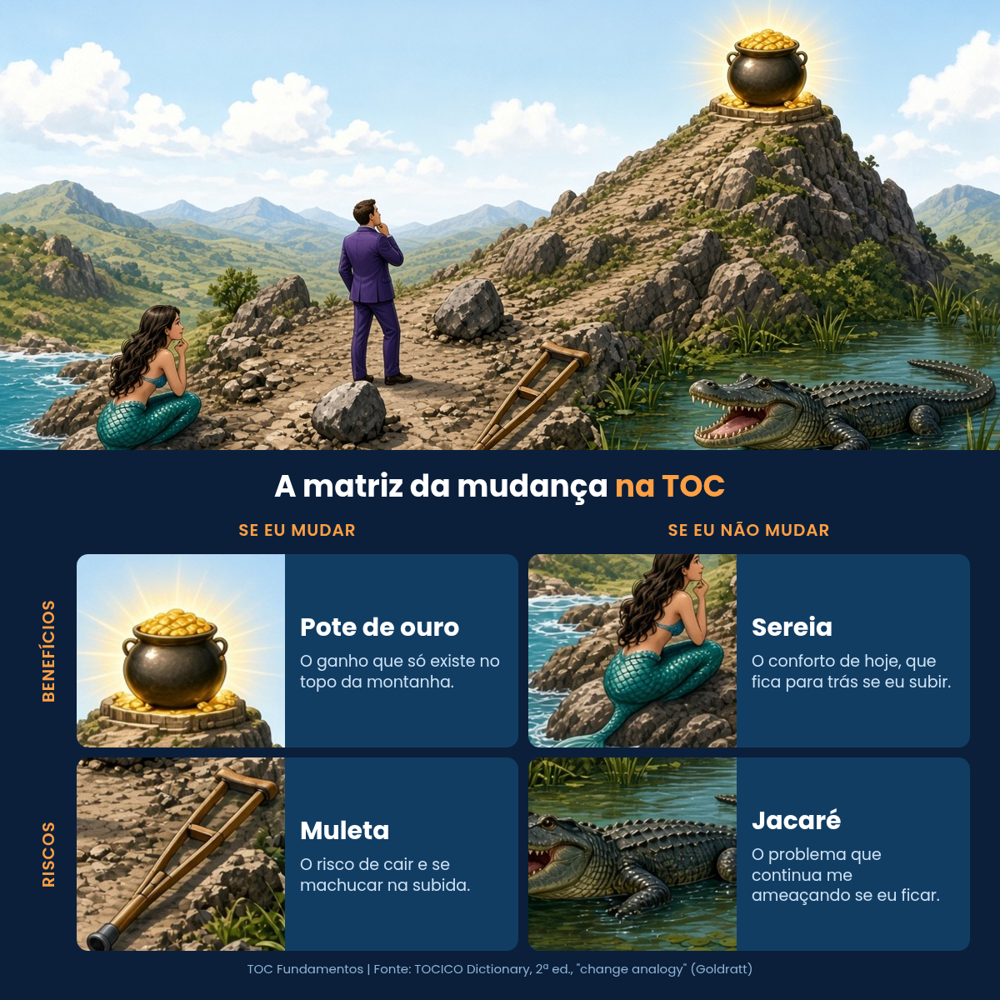
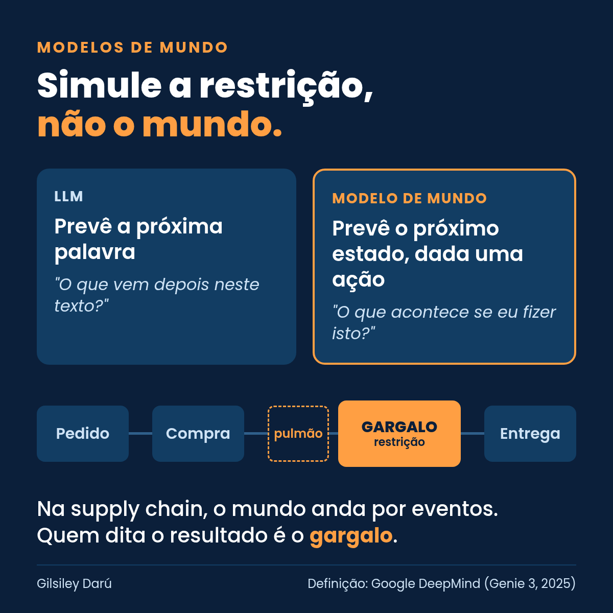
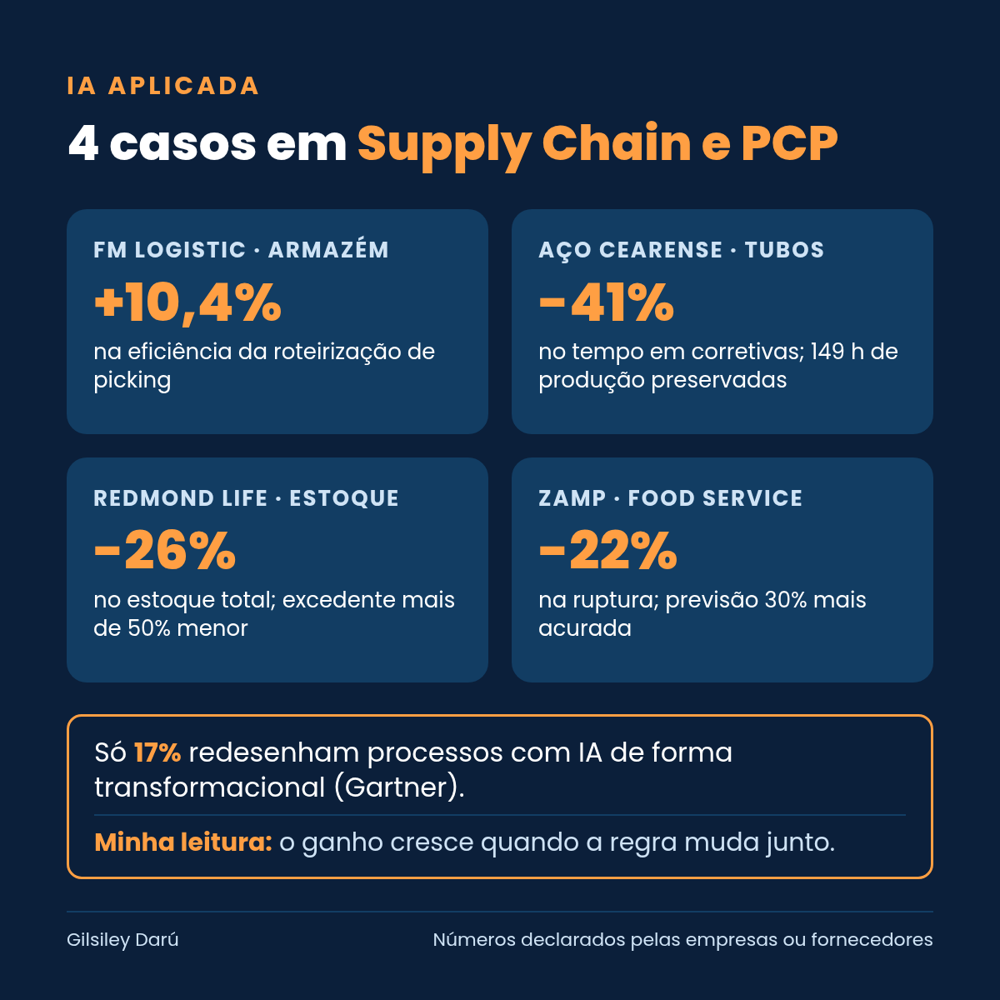
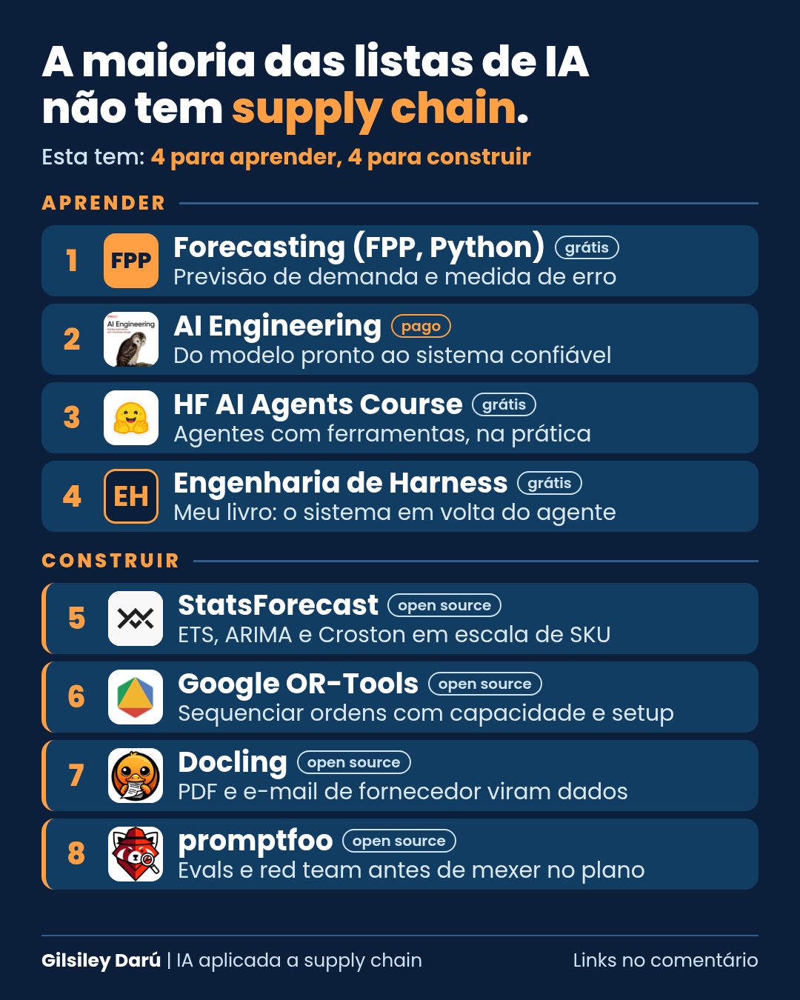
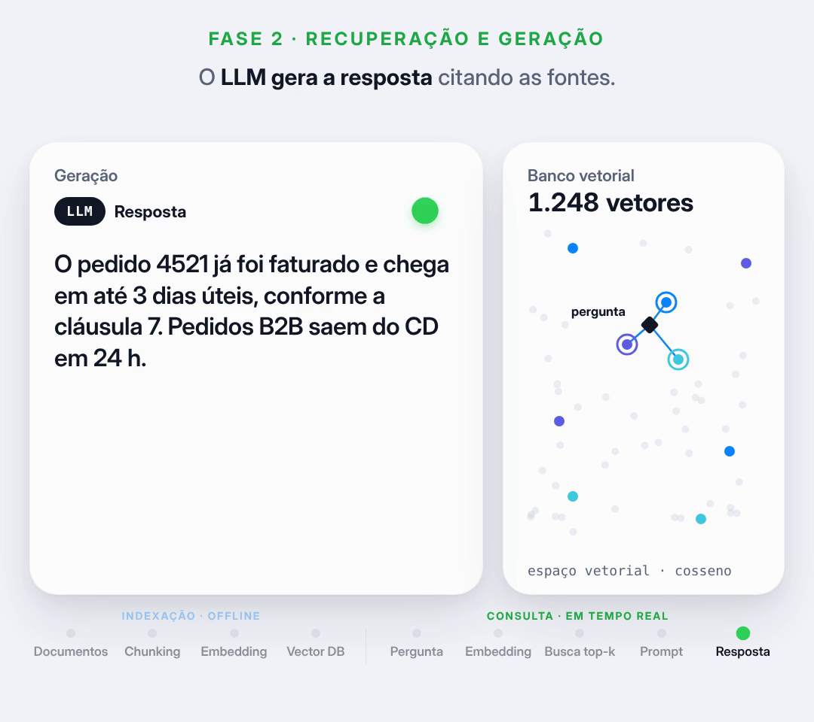
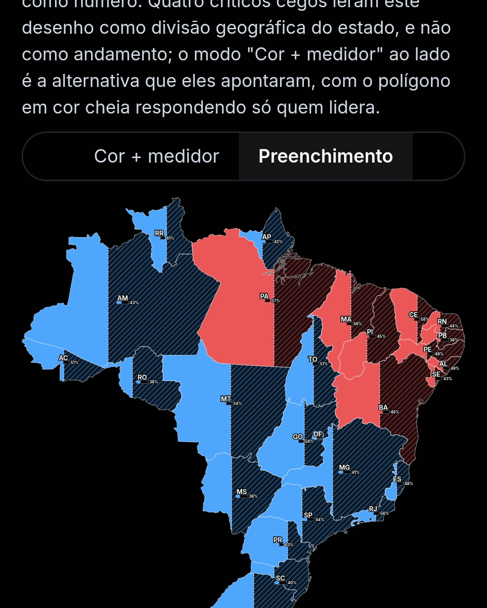

O arco de outubro e novembro de 2026: primeiro a restrição e a regra de decisão, depois a ferramenta.
Gilsiley Henrique Darú
O posicionamento não vende o modelo. Aponta o gargalo, muda a regra (dados, processos, experimentação) e só então escolhe a ferramenta.
O que é restrição e o que é modelo. A base conceitual para o leitor acompanhar o resto do arco.
Quando o modelo é commodity, um insumo, a vantagem está em apontá-lo à restrição.
Com o modelo apontado para a restrição, o trabalho passa a ser governar e mudar a forma de decidir.
| Data | Ato | Tema | Status |
|---|---|---|---|
| 18/10 | Fundar | 4 quadrantes TOC | publicado |
| 20/10 | Fundar | Modelos de mundo | publicado |
| 21/10 | Fundar | IA Aplicada · 4 casos | publicado |
| 22/10 | Fundar | 8 recursos de IA para supply chain | publicado |
| 24/10 | Fundar | RAG · Ep.1 | publicado |
| 25/10 | Fundar | Apuração · mapa (extra) | publicado |
| 26/10 | Deslocar | Kickoff / modelo = insumo | hoje · aguarda OK |
| 27/10 | Deslocar | Ep.2 · LLM e tokens | pendente |
| 28/10 | Deslocar | Quanto custa rodar IA | pendente |
| 30/10 | Deslocar | Previsão: ML clássico × IA generativa | pendente |
| reserva | Deslocar | Agent washing | reserva |
| 01/11 | Governar | Governança de agentes (01/11 é domingo: data em aberto com o Darú) | pendente |
| 03/11 | Governar | Restrição do time de dados | pendente |
| nov+ | Governar | Fundamentos intercalados | pendente |
| nov+ | Governar | Por dentro do agente | proposta |
No kickoff, a primeira pergunta quase sempre é “qual modelo vamos usar?”. Quando todo mundo pode contratar praticamente o mesmo modelo, o modelo vira insumo.
A sereia mais forte não é a tecnologia: são os processos atuais, enraizados. Colocar IA sobre essas regras não muda a montanha, só acelera o processo antigo.
Imagem: posts/2026-10-18-quadrantes-toc/quadrada.png

Modelo de mundo útil em supply chain não é o que imita o mundo, é o que simula a restrição. Sem saber onde está o gargalo, simular tudo é custo.
Imagem: posts/2026-10-20-modelos-de-mundo/imagem.png

Excedente costuma nascer da política de compra: a ferramenta só rende quando essa regra muda junto. A IA entrou para mudar uma regra ou para acelerar a regra antiga?
Imagem: posts/2026-10-21-ia-aplicada-4-casos/imagem.png

A ordem certa é identificar a restrição, explorá-la com o que já existe e só então comprar ferramenta. Por isso a lista começa em previsão e sequenciamento, não em agentes.
Imagem: posts/2026-10-22-8-recursos-ia-supply-chain/imagem.png

A restrição de um projeto de RAG raramente é o modelo. É a governança dos documentos: se ninguém é dono da cláusula 7, o assistente cita a versão errada com toda a confiança.
Imagem: posts/2026-10-24-rag-ep1/capa.png
Notebook e animação: series/ia-do-basico-ao-avancado/ep01-rag/

O mapa projeta cada estado com a fração já apurada e só depois agrega, direto dos arquivos do TSE.
Post avulso de domingo, fora do tema central do arco.
Imagem: posts/2026-10-25-apuracao-mapa/arte_linkedin.png
